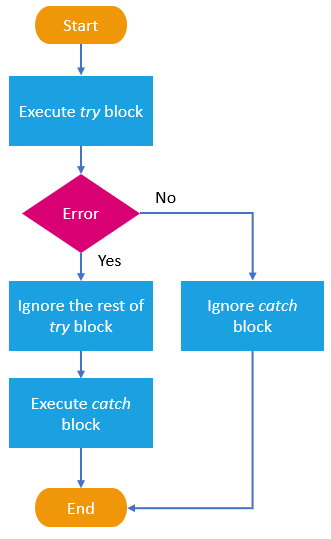
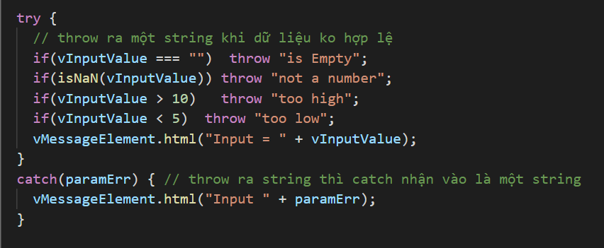

Try-Catch-Throw để xử lý trường hợp ngoại lệ (exception) ở javascript
Khi Throw ra cái gì, thì Catch sẽ nhận được cái đó
 
Điền số từ 5 đến 10:
Thử chỉ với Throw
Thử với Try và Catch
Thử với Try và Catch, Throw Object